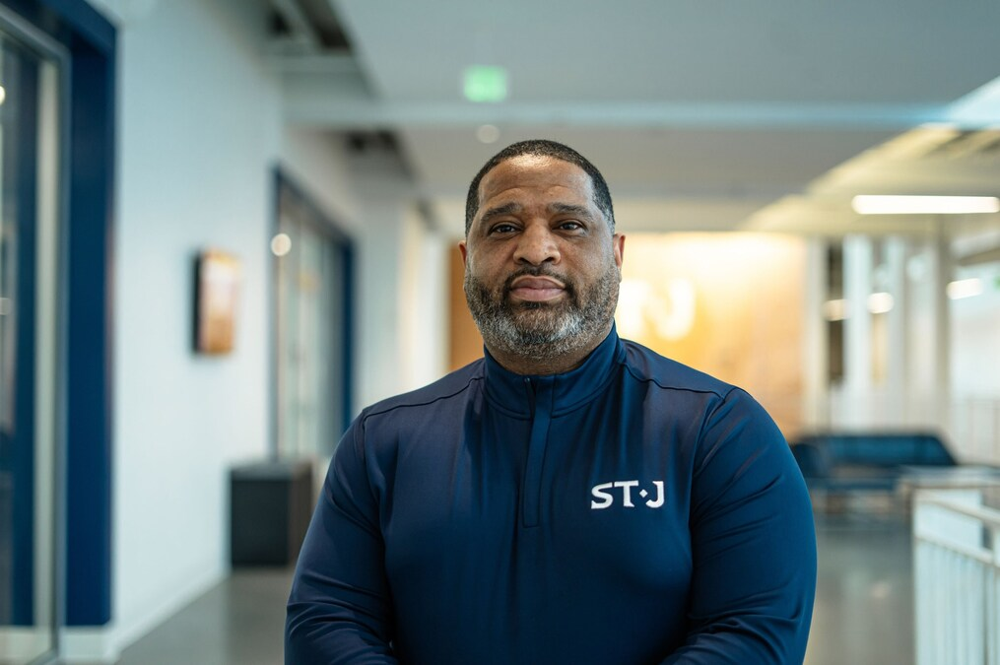

2026 Festival Honorees
Each year, NYUSFF honors individuals whose work has shaped the intersection of sports, cinema, and culture. This year, we are proud to recognize two extraordinary voices in the world of sports storytelling.

2026 Honoree
Mike Tollin
Mike Tollin is one of the defining voices in modern sports storytelling, with a career spanning award-winning documentaries, feature films, and landmark television series. As the executive producer of The Last Dance and The Redeem Team, Tollin has helped shape how global audiences understand the cultural, emotional, and historical impact of sport.
With Unraveling George, his latest documentary, Tollin turns his lens toward the overlooked architects of the game — telling the story of Hall of Fame coach George Raveling, a figure whose influence helped shape basketball's global evolution and the rise of Nike.
Across decades of work — from Coach Carter to ESPN's 30 for 30 — Tollin has consistently elevated sports beyond competition, revealing it as a vehicle for leadership, identity, and cultural change. His work reflects a deep commitment to honoring the human stories behind the game, making him a natural honoree for a festival dedicated to the intersection of sport and cinematic storytelling.
2026 Honoree
Emanuel "Book" Richardson
Emanuel "Book" Richardson's story sits at the intersection of basketball, controversy, and redemption — making him a powerful subject within the evolving landscape of sports storytelling. A respected coach with deep ties to the college game, Richardson's career has been shaped by both his contributions to player development and his central role in one of the most consequential NCAA scandals of the modern era.
Through Open Book, Richardson steps forward to tell his story in his own voice — offering a rare, unfiltered perspective on the pressures, complexities, and systemic realities of college basketball. His willingness to engage with his past publicly transforms his narrative from one of controversy into one of accountability and reflection.
At a time when the structure of college athletics is rapidly changing — from NIL to athlete empowerment — Richardson's story provides essential context for understanding how the system operated, and where it may be headed. His presence at NYUSFF underscores the festival's commitment not just to celebrating sport, but to interrogating it — through honest, human storytelling.